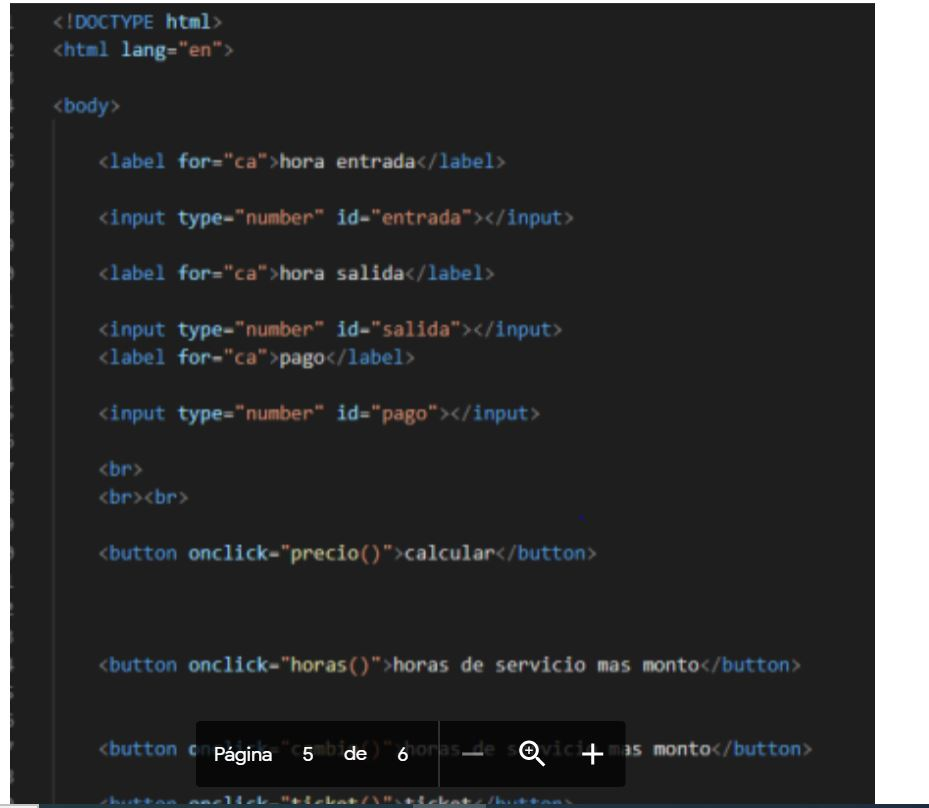

actividad #1
En esta ctividad solo refresque mis conocimientos antes aprendidos
actividad #2
En esta actividad aprendi a emplear los formularios y hacerlos que funcionen
actividad #3
Aqui ya sabiendo como hacer un formulario basico empeze a conocer como hacerlos que
cumplan funciones mas avanzadas
actividad #4
En esta actividad aprendi a utilizar solo javascrip
actividad #5
Aqui aprendi a como hacer que el texto introducido se pueda repetir
actividad #6
En esta aprendi a usar los arreglos
actividad #8
Hicimos una calculadora y se usaron numeros aleatorios
actividad #9
En esta actividad solo seguimos repasando lo que ya habiamos aprendido
actividad #10
Aqui utilizamos un poco mas avanzado los formularios
actividad #12
En esta aprendimos a usar el efecto de sombras
actividad #13

en esta actividad aprendimos a darle un diseño a un cuadrado en esta actividad
Estas son solo algunas de las actividades de aprendisaje que utilice este semestre.